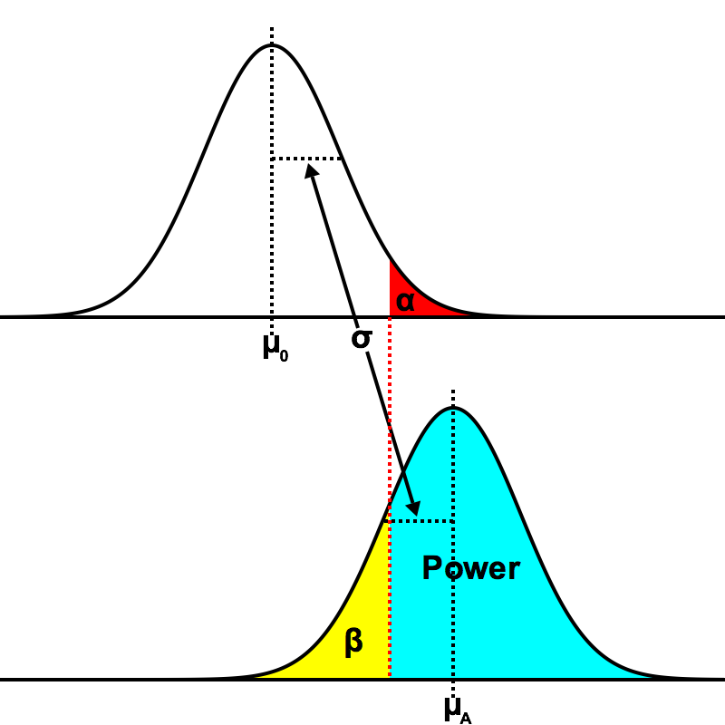

Errors
General Ideas
Type I error is "the probability that we rejet the null-hypothesis given that it is true". Type II error is "the probability that we accept (fail to reject) the null-hypothesis, given that its false." These concepts are intricately connected.Example
...Generalization
Let's say we have a population that is normally distributed with known standard deviation, $\sigma$ and unknown mean, $\mu$. We take a sample of $n$ individuals and find a sample mean $\mu_0$. The powers that be that are concerned with whether $\mu \gt \mu_A$. We will call $\mu = \mu_0$ the null-hypotehsis, and we will call $\mu = \mu_A$ the alternative hypothesis. Let's furthermore say we have been given an alpha level, $\alpha$.  Given our $\alpha$, we can compute a quantile, $q_0$. This gives us an equation to let us solve for our critical number, $C$. $$q_0 = \frac{C - \mu_0}{\sigma / \sqrt{n}}$$ $$C = \mu_0 + \frac{q_0\sigma}{\sqrt{n}}$$ Now, if we can solve for the z-score $C$ has given the alternative hypothesis, we can calculate the power. $$q_A = \frac{C - \mu_A}{\sigma / \sqrt{n}}$$ By substitution $$q_A = \frac{\mu_0 + \frac{q_0\sigma}{\sqrt{n}} - \mu_A}{\sigma / \sqrt{n}}$$| As an aside, if you know the power you require, the following form might prove useful $$\sigma \left(q_A - q_0\right) = \left(\mu_0 - \mu_A\right) \sqrt{n}$$ |